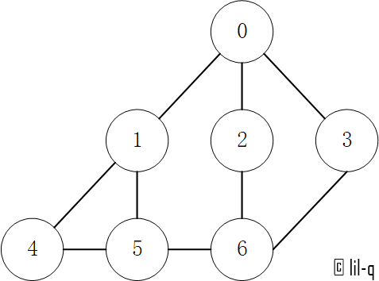
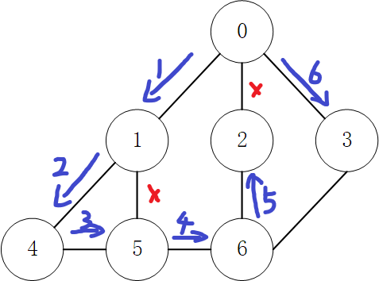
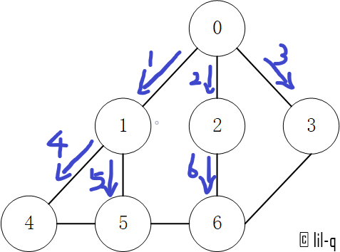
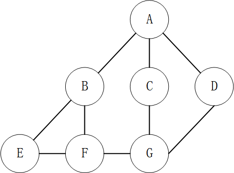
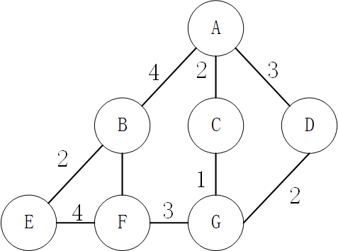
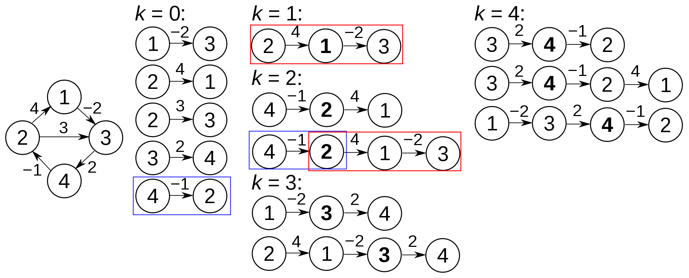
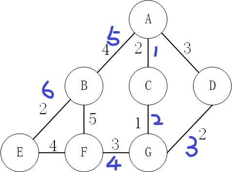
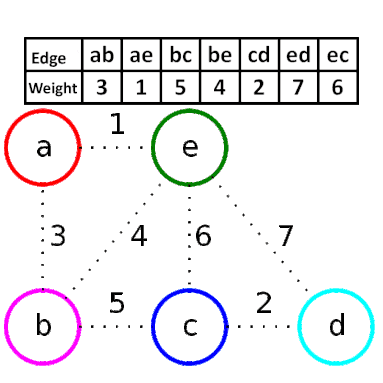
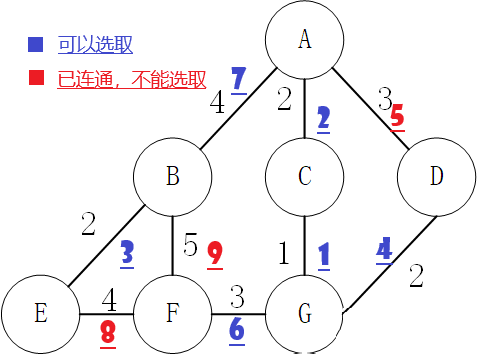

生活不就是一张图吗？
定义
图(Graph)用于表示物件与物件之间的关系，是图论的基本研究对象。一张图由一些小圆点（称为顶点或结点）和连结这些圆点的直线或曲线（称为边）组成。
一个图 $G$ 是一个二元组，即序偶 $\langle V,E\rangle$ ，或记作 $G= \langle V,E\rangle$ ，其中 $V$ 是有限非空集合，称为 $G$ 的顶点集， $V$ 中的元素称为顶点或结点； $E$ 称为 $G$ 的边的集合， $\forall e_i \in E$ ，都有 $V$ 中的结点与之对应，称 $e_i$ 为 $G$ 的边。
简单来说，就是图 $G$ 就是一个结点的集合 $V$ 和边的集合 $E$ ，其中任意一条边都可以表示为两个结点之间的关系。若 $e_i\in E$ 表示为 $\langle u,v\rangle$ ，则有 $u\in V , v\in V$ 。
图的基本概念
无向图：每条边都是无向边的图。
有向图：每条边都是有向边的图。
有权图：每条边具有一定的权重(weight)，通常是一个数字
无权图：每条边均没有权重，也可以理解为权为 1
连通图：所有的点都有路径相连
非连通图：存在某两个点没有路径相连
混合图：在一个图中，有些边是有向边，另一些边是无向边，则该图为混合图。
有限图：一个图的点集和边集都是有穷集的图。
零图：边集为空集的图。
平凡图：仅有一个结点而没有边构成的图。
关联：若有 $e_i=(u,v)$ 且 $e_i\in E$ ，则称 $u$ 是和 $v$ 相关联的。
孤立点：无边关联的点。
自环：若一条边所关联的两个结点重合，则称此边为自环。
邻接：关联于同一条边的两个点 $u$ 和 $v$ 称为邻接的；关联于同一个点的两条边 $e_1$ 和 $e_2$ 是邻接的（或相邻的）。
结点的度数
设图 $G= \langle V,E\rangle$ 为一个有向图， $v\in V$ ，关联于结点 $v$ 的 边 的条数，称为点 $v$ 的度数，记作 $\deg(v)$ 。
注意：一个自环为它的端点增加 2 度。
当图 $G= \langle V,E\rangle$ 为一个有向图， $v\in V$ ，称以 $v$ 作为始点的边数之和称为结点 $v$ 的出度，记为 $\deg^{+} (v)$ 。将以 $v$ 作为终点的边数之和称为结点 $v$ 的入度，记为 $\deg^{-} (v)$ 。称以 $v$ 作为端点的边数之和为结点 $v$ 的度数或度，记为 $\deg(v)$ 。
显然， $\forall v\in V,\deg(v)=deg^{+} (v)+\deg^{-} (v)$ 。
子图的概念
设有图 $G= \langle V,E\rangle$ 和图 $G’= \langle V’,E’\rangle$ 。
如果 $V’\subseteq V,E’\subseteq E$ ，则称 $G’$ 是 $G$ 的子图，记作 $G’\subseteq G$ 。
如果 $G’\subsetneqq G$ ，即 $V’\subset V$ 或 $E’\subset E$ ，则称 $G’$ 是 $G$ 的真子图，记作 $G’\subset G$ 。
如果 $V’=V,E’\subseteq E$ ，则称 $G’$ 是 $G$ 的生成子图。
如果 $V’’\subseteq V$ 且 $V’’ \neq \varnothing$ ，以 $V’’$ 为结点集，以两端点均在 $V’’$ 中的边为边集的 $G$ 的子图，称为 $V’’$ 导出的 $G$ 的子图，简称为 $V’’$ 的导出子图。
如果 $G’’= \langle V’’,E’’\rangle$ 使得 $E’’=E-E’$ ，且 $V’’$ 中仅包含 $E’’$ 中的边所关联的结点，则称 $G’’$ 是子图 $G’$ 相对于原图 $G$ 的补图。
特殊的图
树：边数比结点数少一的连通图。更多内容，详见 树相关基础。
森林：由 $m$ 棵（ $m\ge 0$ ）互不相交的树组成的图。
基环树：边数和点数相等的连通图。
仙人掌：每条边至多属于一个简单环的无向连通图。
在无向图中，关联一对顶点的边多于 $1$ 条，则称这些边为重边（平行边），重边的条数称为重数。
简单图：不含重边和自环的图。
多重图：含重边的图。
完全图：每对不同的顶点之间都恰连有一条边相连的简单无向图。容易证明， $n$ 个顶点的完全图有 $\dfrac{n(n-1)}{2}$ 条边。
竞赛图：通过在完全图中为每条边分配方向而获得的有向图。
参考资料：离散数学（修订版），田文成 周禄新 编著，天津文学出版社，P184-187
图的存储
以下图作为例子。

直接存边
建立一个数组，数组里每个元素是图的一条边。
这样做有个缺点，每次想要知道两个点之间是否有连边（或者说一条边是否存在），都需要在数组里进行一番查找。而且如果没有对边事先排序的话，就不能使用二分查找的方法（ $O(\log n)$ ），而是每次只能按顺序找（ $O(n)$ ），成本较高。
什么时候会用到这个方法呢？最简单的一个例子是使用 Kruskal 算法求最小生成树的时候。
[ [0,1], [0,6], [0,8], [1,4], [1,6], [1,9], [2,4], [2,6], [3,4], [3,5],
[3,8], [4,5], [4,9], [7,8], [7,9] ]
邻接矩阵
邻接矩阵的英文名是 adjacency matrix。它的形式是 bool adj[n][n] ，这里面 $n$ 是节点个数， $adj[i][j]$ 表示 $i$ 和 $j$ 之间是否有边。
如果边有权值，也可以直接用 int adj[n][n] ，直接把边权存进去。
它的优点是可以在 $O(1)$ 时间内得到一条边是否存在，缺点是需要占用 $O(n^2)$ 的空间。对于一个稀疏的图（边相对于点数的平方比较少）来说，用邻接矩阵来存的话，成本偏高。

[ [0, 1, 0, 0, 0, 0, 1, 0, 1, 0],
[1, 0, 0, 0, 1, 0, 1, 0, 0, 1],
[0, 0, 0, 0, 1, 0, 1, 0, 0, 0],
[0, 0, 0, 0, 1, 1, 0, 0, 1, 0],
[0, 1, 1, 1, 0, 1, 0, 0, 0, 1],
[0, 0, 0, 1, 1, 0, 0, 0, 0, 0],
[1, 1, 1, 0, 0, 0, 0, 0, 0, 0],
[0, 0, 0, 0, 0, 0, 0, 0, 1, 1],
[1, 0, 0, 1, 0, 0, 0, 1, 0, 0],
[0, 1, 0, 0, 1, 0, 0, 1, 0, 0] ]
邻接表
邻接表英文名是 adjacency list。它的形式是 vector adj[n] ，用 adj[i] 存以 $i$ 为起点的边。
用 vector 无法科学地删除，所以常用 list 实现。
它的特点是可以用来按顺序访问一个结点的出边（或者入边）。

[ [1, 6, 8],
[0, 4, 6, 9],
[4, 6],
[4, 5, 8],
[1, 2, 3, 5, 9],
[3, 4],
[0, 1, 2],
[8, 9],
[0, 3, 7],
[1, 4, 7] ]
图的遍历
图的遍历问题分为四类：
- 遍历完所有的边而不能有重复，即所谓“欧拉路径问题”（又名一笔画问题）；
- 遍历完所有的顶点而没有重复，即所谓“哈密顿路径问题”。
- 遍历完所有的边而可以有重复，即所谓“中国邮递员问题”；
- 遍历完所有的顶点而可以重复，即所谓“旅行推销员问题”。
对于第一和第三类问题已经得到了完满的解决，而第二和第四类问题则只得到了部分解决。
第一类问题就是研究所谓的欧拉图的性质，而第二类问题则是研究所谓的哈密顿图的性质。
图的遍历方法有深度优先搜索法和广度(宽度)优先搜索法。以下图为例。

建立邻接表：
adjacencylists = [[1, 2, 3],
[0, 4, 5],
[0, 6],
[0, 6],
[1, 5],
[1, 4, 6],
[2, 3, 5]]
深度优先搜索(Depth First Search, DFS)
深度优先搜索算法(Depth-First-Search，DFS)是一种用于遍历或搜索树或图的算法。沿着树的深度遍历树的节点，尽可能深的搜索树的分支。当节点v的所在边都己被探寻过，搜索将回溯到发现节点v的那条边的起始节点。这一过程一直进行到已发现从源节点可达的所有节点为止。如果还存在未被发现的节点，则选择其中一个作为源节点并重复以上过程，整个进程反复进行直到所有节点都被访问为止。属于盲目搜索。

广度优先搜索(Breadth First Search, BFS)
广度优先搜索算法(Breadth-First-Search，缩写为BFS)，又译作宽度优先搜索，或横向优先搜索，是一种图形搜索算法。简单的说，BFS是从根节点](https://zh.wikipedia.org/w/index.php?title=根節點&action=edit&redlink=1)开始，沿着树的宽度遍历树的节点**。如果所有节点均被访问，则算法中止。广度优先搜索的实现一般采用open-closed表。

Python的简易实现
# 设置总节点数
num_vertexs = 7
# 建立邻接表
adjacencylists = [[1, 2, 3],
[0, 4, 5],
[0, 6],
[0, 6],
[1, 5],
[1, 4, 6],
[2, 3, 5]]
class graph:
def __init__(self, num_vertexs, adjacencylists):
self.num_vertexs = num_vertexs
self.adjacencylists = adjacencylists
def dfs(self, start):
# 记录节点是否已经访问
visited = [False] * self.num_vertexs
res = []
def helper(v):
if visited[v]:
return
visited[v] = True
res.append(v)
for i in self.adjacencylists[v]:
helper(i)
helper(start)
return res
def bfs(self, start):
visited = [False] * self.num_vertexs
visited[start] = True
res = [start,]
queue = [start,]
while queue:
cur = queue.pop(0)
for i in self.adjacencylists[cur]:
if not visited[i]:
queue.append(i)
visited[i] = True
res.append(i)
return res
if __name__ == '__main__':
# 实例化
graph = graph(num_vertexs, adjacencylists)
t1 = graph.dfs(0)
print("深度优先搜索：", t1)
t2 = graph.bfs(0)
print("广度优先搜索：", t2)
注意：这里用index表示节点名称，最后还需要映射出结果（假设0,1,2,3…分别对应A,B,C,D…下文会使用字典来实现邻接表，这样就不需要这一步了）：
vertexs = ["A", "B", "C", "D", "E", "F", "G"]
t3 = list(map(lambda x: vertexs[x], t1))
print("深度优先搜索：", t3)
t4 = list(map(lambda x: vertexs[x], t2))
print("广度优先搜索：", t4)

输出：
深度优先搜索： [0, 1, 4, 5, 6, 2, 3]
广度优先搜索： [0, 1, 2, 3, 4, 5, 6]
深度优先搜索： ['A', 'B', 'E', 'F', 'G', 'C', 'D']
广度优先搜索： ['A', 'B', 'C', 'D', 'E', 'F', 'G']
最短路径算法
Dijkstra算法
特点
Dijkstra 算法使用了广度优先搜索解决赋权有向图或者无向图的单源最短路径问题，算法最终得到一个最短路径树。该算法常用于路由算法或者作为其他图算法的一个子模块。Dijkstra 算法属于单源算法，即只能求出某点到其它点最短距离，并不能得出任意两点之间的最短距离，只能用权值为正数的图，存在负数时可能回陷入死循环。
流程
Dijkstra算法采用的是一种贪心的策略，声明一个数组distances来保存源点到各个顶点的最短距离和一个保存已经找到了最短路径的顶点的集合：nodes。以下图为例，假设求A点到其他点的距离。

初始化distances，原点 s 的路径权重被赋为 0 （dis[s] = 0）。把到其他顶点的路径长度设为无穷大。
distances = {'A': 0, 'B': inf, 'C': inf, 'D': inf, 'E': inf, 'F': inf, 'G': inf}初始nodes，理论上集合nodes只有顶点s。这里创建了其他节点是方便之后的进堆操作，不用再考虑节点是否存在两种情况。
nodes = [[0, 'A'], [inf, 'B'], [inf, 'C'], [inf, 'D'], [inf, 'E'], [inf, 'F'], [inf, 'G']]从distances数组选择最小值，则该值就是源点s到该值对应的顶点的最短路径，并且把该点加入到nodes中。
distances = {'A': 0, 'B': 4, 'C': 2, 'D': 3, 'E': inf, 'F': inf, 'G': inf} # 加入了A的近邻B，C，D nodes = [[2, 'C'], [3, 'D'], [4, 'B'], [inf, 'G'], [inf, 'E'], [inf, 'F']] # A被推出，更新B，C，D重复这个过程，直到nodes为s空或nodes中的最小值是无穷大（与剩下的节点都不连通）时。
代码
import heapq
class Graph:
def __init__(self):
self.vertices = {}
def add_vertex(self, name, edges):
self.vertices[name] = edges
def shortest_path(self, start, finish):
distances = {} # 记录各点到起点距离
previous = {} # 记录先前路径，注意：对于求最小路径时，每个点的先前路径是唯一的。
nodes = [] # 优先队列
for vertex in self.vertices:
if vertex == start: # 原点 s 的路径权重被赋为 0 （dis[s] = 0）。把到其他顶点的路径长度设为无穷大。
distances[vertex] = 0
heapq.heappush(nodes, [0, vertex])
else:
distances[vertex] = float('inf')
heapq.heappush(nodes, [float('inf'), vertex])
previous[vertex] = None
while nodes:
smallest = heapq.heappop(nodes)[1] # pop优先队列的第一个节点
if smallest == finish: # 保存路径
path = []
cur = smallest
while cur: # 循环到起点，其先前节点为None，结束
path.append(cur)
cur = previous[cur]
path.reverse()
if distances[smallest] == float('inf'): # 剩余所有节点已不相邻
break
for neighbor in self.vertices[smallest]: # 获取近邻节点
alt = distances[smallest] + self.vertices[smallest][neighbor]
if alt < distances[neighbor]: # 得到的路径比之前的近，则更新nodes，previous
previous[neighbor] = smallest
distances[neighbor] = alt
for n in nodes:
if n[1] == neighbor:
n[0] = alt
break
heapq.heapify(nodes)
#print(distances,nodes)
return distances[finish], path
def __str__(self):
return str(self.vertices)
if __name__ == '__main__':
# 实例化，这个类需要依次传入所有边。
g = Graph()
g.add_vertex('A', {'B': 4, 'C': 2, 'D': 3})
g.add_vertex('B', {'A': 4, 'E': 2, 'F': 5})
g.add_vertex('C', {'A': 2, 'G': 1})
g.add_vertex('D', {'A': 3, 'G': 2})
g.add_vertex('E', {'B': 2, 'F': 4})
g.add_vertex('F', {'B': 5, 'E': 4, 'G': 3})
g.add_vertex('G', {'C': 1, 'D': 2, 'F': 3})
print(g.shortest_path('A', 'G'))
Floyd-Warshall算法
特点
Floyd-Warshall算法(Floyd-Warshall algorithm)，中文亦称弗洛伊德算法，是解决任意两点间的最短路径的一种算法，可以正确处理有向图或负权（但不可存在负权回路）的最短路径问题，同时也被用于计算有向图的传递闭包。
Floyd 算法是一个经典的动态规划算法。
设为从到的只以集合中的节点为中间节点的最短路径的长度。
- 若最短路径经过点k，则；
- 若最短路径不经过点k，则
因此，。
在实际算法中，为了节约空间，可以直接在原来空间上进行迭代，这样空间可降至二维。
流程


Floyd-Warshall算法的时间复杂度为，空间复杂度为。
代码
def floyd(graph):
length = len(graph)
path = {}
# 建立初始路径path
for i in range(length):
path[i] = {}
for j in range(length):
if i != j and graph[i][j] != float('inf'):
path[i][j] = [i, j]
# i为选取的中间节点
for i in range(length):
# j为中间节点i的前节点
for j in range(length):
if i == j:
continue
# k为中间节点i的后节点
for k in range(length):
if k == i or k == j:
continue
new_len = graph[j][i] + graph[i][k]
if graph[j][k] > new_len:
graph[j][k] = new_len
new_node = i
# 合并路径
path[j][k] = path[j][i][:-1] + path[i][k]
return graph, path
if __name__ == '__main__':
ini = float('inf')
graph_list = [
[0, ini, -2, ini],
[4, 0, 3, ini],
[ini, ini, 0, 2],
[ini, -1, ini, 0]
]
new_graph, path = floyd(graph_list)
print(new_graph, '\n\n\n', path)
生成树
对连通图进行遍历，过程中所经过的边和顶点的组合可看做是一棵普通树，通常称为生成树。

a) 是一张连通图，b) 是其对应的 2 种生成树。
连通图中，由于任意两顶点之间可能含有多条通路，遍历连通图的方式有多种，往往一张连通图可能有多种不同的生成树与之对应。
连通图中的生成树必须满足以下 2 个条件：
- 包含连通图中所有的顶点；
- 任意两顶点之间有且仅有一条通路；
因此，连通图的生成树具有这样的特征，即生成树中边的数量 = 顶点数 - 1。
Prim算法
普里姆算法（Prim’s algorithm），图论中的一种算法，可在加权连通图里搜索最小生成树。意即由此算法搜索到的边子集所构成的树中，不但包括了连通图里的所有顶点，且其所有边的权值之和亦为最小。
流程
- 输入：一个加权连通图，其中顶点集合为 V，边集合为 E
- 初始化：Vnew = {x}，其中 x 为集合 V 中的任一节点(起始点)，Enew = {} 为空
- 在集合 E 中选取权值最小的边
- 将 v 加入集合 Vnew 中，将
- 重复步骤 3、4 直到 Vnew = V

时间复杂度：
代码
def prim(graph, root):
assert type(graph)==dict
nodes = list(graph)
nodes.remove(root)
visited = [root]
path = []
next = None
while nodes:
distance = float('inf')
for s in visited:
for d in graph[s]:
if d in visited or s == d:
continue
if graph[s][d] < distance:
distance = graph[s][d]
pre = s
next = d
path.append((pre, next))
visited.append(next)
nodes.remove(next)
return path
if __name__ == '__main__':
ini = float('inf')
graph_dict = { 'A': {'A': ini, 'B': 4, 'C': 2, 'D': 3, 'E': ini, 'F': ini, 'G': ini},
'B': {'A': 4, 'B': ini, 'C': ini, 'D': ini, 'E': 2, 'F': 5, 'G': ini},
'C': {'A': 2, 'B': ini, 'C': ini, 'D': ini, 'E': ini, 'F': ini, 'G': 1 },
'D': {'A': 3, 'B': ini, 'C': ini, 'D': ini, 'E': ini, 'F': ini, 'G': 2 },
'E': {'A': ini, 'B': 2, 'C': ini, 'D': ini, 'E': ini, 'F': 4, 'G': ini},
'F': {'A': ini, 'B': 5, 'C': ini, 'D': ini, 'E': 4, 'F': ini, 'G': 3 },
'G': {'A': ini, 'B': ini, 'C': 1, 'D': 2, 'E': ini, 'F': 3, 'G': ini},
}
path = prim(graph_dict, 'A')
print("path:", path)
可以看到输出顺序和上图是一致的：
path: [('A', 'C'), ('C', 'G'), ('G', 'D'), ('G', 'F'), ('A', 'B'), ('B', 'E')]
Kruskal算法
Kruskal算法是一种用来查找最小生成树的算法，由Joseph Kruskal在1956年发表。基于并查集的数据结构。

流程
- 新建图，中拥有原图中相同的节点，但没有边
- 将原图中所有的边按权值从小到大排序
- 从权值最小的边开始，如果这条边连接的两个节点于图中不在同一个连通分量中，则添加这条边到图中
- 重复3，直至图中所有的节点都在同一个连通分量中

代码
def find(id, p):
while p != id[p]:
id[p] = id[id[p]]
p = id[p]
return p
def union(id, size, p, q):
root_p = find(id, p)
root_q = find(id, q)
if root_p != root_q:
if size[p] < size[q]:
id[root_p] = root_q
size[q] += size[p]
else:
id[root_q] = root_p
size[p] += size[q]
def kruskal(graph):
assert type(graph)==dict
edges = [(graph[u][v], u, v) for u in graph for v in graph[u] if graph[u][v] != float('inf')]
path = []
id, size = {u:u for u in graph}, {u:0 for u in graph}
for _, u, v in sorted(edges):
if find(id, u) != find(id, v):
path.append((u, v))
union(id, size, u, v)
return path
输入与理论一致：
path: [('C', 'G'), ('A', 'C'), ('B', 'E'), ('D', 'G'), ('F', 'G'), ('A', 'B')]
例题
1. leetcode 778. 水位上升的泳池中游泳
在一个 N x N 的坐标方格 grid 中，每一个方格的值 grid[i][j] 表示在位置 (i,j) 的平台高度。
现在开始下雨了。当时间为 t 时，此时雨水导致水池中任意位置的水位为 t 。你可以从一个平台游向四周相邻的任意一个平台，但是前提是此时水位必须同时淹没这两个平台。假定你可以瞬间移动无限距离，也就是默认在方格内部游动是不耗时的。当然，在你游泳的时候你必须待在坐标方格里面。
你从坐标方格的左上平台 (0，0) 出发。最少耗时多久你才能到达坐标方格的右下平台 (N-1, N-1)？
输入: [[0,1,2,3,4],[24,23,22,21,5],[12,13,14,15,16],[11,17,18,19,20],[10,9,8,7,6]]
输入: 16
解释:
0 1 2 3 4
5
12 13 14 15 16
11
10 9 8 7 6
使用简化版的Dijkstra算法。
class Solution(object):
def swimInWater(self, grid):
N = len(grid)
seen = {(0, 0)} # 记录已经访问过的点
pq = [(grid[0][0], 0, 0)] # 创建优先队列
ans = 0
while pq:
d, r, c = heapq.heappop(pq)
# 更新最小路径中的最大值
ans = max(ans, d)
if r == c == N-1: return ans
# 将有可能经过的点都加入到优先队列
for cr, cc in ((r-1, c), (r+1, c), (r, c-1), (r, c+1)):
if 0 <= cr < N and 0 <= cc < N and (cr, cc) not in seen:
heapq.heappush(pq, (grid[cr][cc], cr, cc))
seen.add((cr, cc))
2. leetcode 207. 课程表
现在你总共有 n 门课需要选，记为 0 到 n-1。在选修某些课程之前需要一些先修课程。 例如，想要学习课程 0 ，你需要先完成课程 1 ，我们用一个匹配来表示他们: [0,1]。给定课程总量以及它们的先决条件，判断是否可能完成所有课程的学习？
这是典型的有向图的拓扑排序问题。有两种解法，利用入度表和深度有限搜索。
解法一：入度表
- 将边信息转换为邻接表
adjacency，同时记录每个点的入度indegrees - 取出所有入度为0的点加入队列
queue - 宽度优先搜索，每从队列里取出一个节点，numCourses -= 1, 环内的节点入度不会为0，所以当有环时, numcourses不为0
class Solution:
def canFinish(self, numCourses: int, prerequisites: List[List[int]]) -> bool:
indegrees = [0 for _ in range(numCourses)]
adjacency = [[] for _ in range(numCourses)]
queue = []
# 将边信息转换为邻接表adjacency，同时记录每个点的入度indegrees
for cur, pre in prerequisites:
indegrees[cur] += 1
adjacency[pre].append(cur)
# 取出所有入度为0的点加入队列queue
for i in range(len(indegrees)):
if not indegrees[i]: queue.append(i)
# 宽度优先搜索
while queue:
pre = queue.pop(0)
numCourses -= 1
for cur in adjacency[pre]:
indegrees[cur] -= 1
if not indegrees[cur]: queue.append(cur)
return not numCourses
解法二：深度优先搜索
借助一个标志列表 flags，用于判断每个节点 i （课程）的状态：
未被 DFS 访问：i == 0；
已被其他节点启动的DFS访问：i == -1；
已被当前节点启动的DFS访问：i == 1。
class Solution(object):
def canFinish(self, numCourses, prerequisites):
# 深度优先搜索
def dfs(i,adjacency,flags):
if flags[i]==1:return False
if flags[i]==-1:return True
flags[i]=1
print(i,adjacency)
for nex in adjacency[i]:
if not dfs(nex,adjacency,flags):return False
flags[i]=-1
return True
# 建立邻接表，并在最后加入一个节点指向所有的节点
flags=[0 for _ in range(numCourses+1)]
adjacency=[[] for _ in range(numCourses)]
adjacency.append([i for i in range(numCourses)])
for cur,pre in prerequisites:
adjacency[pre].append(cur)
# 对最后的dummy节点进行深度优先搜索
return dfs(numCourses,adjacency,flags)
错误与不足请不吝指正，转载请注明，谢谢
参考
- https://www.cnblogs.com/skywang12345/p/3691463.html
- https://zh.wikipedia.org/wiki/%E5%9B%BE_(%E6%95%B0%E5%AD%A6))
- https://oi-wiki.org/graph/
- http://data.biancheng.net/view/202.html
- https://www.khanacademy.org/computing/computer-science/algorithms/graph-representation/a/representing-graphs
- https://en.wikipedia.org/wiki/Floyd%E2%80%93Warshall_algorithm
- https://leetcode-cn.com/problems/course-schedule/solution/course-schedule-tuo-bu-pai-xu-bfsdfsliang-chong-fa/
本博客所有文章除特别声明外，均采用 CC BY-SA 3.0协议 。转载请注明出处！